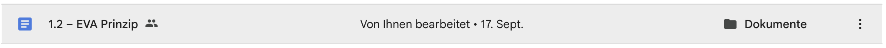

Google Drive
Eigentümer und Rechte
Eine Datei kann vielen Personen offenstehen und trotzdem nur einer Person gehören.
In Google Drive ist der Eigentümer die Person, der die Datei gehört. Wer die Datei nur öffnen oder bearbeiten darf, ist dadurch nicht automatisch Eigentümer.
Welche Rolle bedeutet was?
Betrachter
Kann die Datei ansehen, aber ihren Inhalt nicht ändern.
Kommentator
Kann die Datei ansehen und Kommentare oder Vorschläge hinterlassen, aber den Inhalt nicht direkt bearbeiten.
Bearbeiter
Kann den Inhalt verändern. Das ist für gemeinsames Arbeiten praktisch. Bearbeiten macht die Person aber nicht zum Eigentümer.
Eigentümer
Kann die Datei bearbeiten und ihre Freigabe verwalten. Wer in seiner eigenen Ablage eine neue Datei erstellt oder hochlädt, ist normalerweise ihr Eigentümer.
Woran erkenne ich den Eigentümer?
Das Symbol mit zwei Personen neben einem Dateinamen zeigt: Die Datei ist geteilt. Es sagt nicht, wem sie gehört.

Öffne bei der Datei Freigeben. In der Liste „Personen mit Zugriff“ steht beim Eigentümer die Rolle Eigentümer. In Drive kannst du außerdem die Dateiinformationen ansehen.
Was passiert beim Kopieren und Abgeben?
Wenn dir jemand ein Dokument freigibt, bleibt diese Person Eigentümer des Originals. Erstellst du mit deinem Konto eine Kopie in Meine Ablage, ist diese neue Datei deine eigene. Original und Kopie können danach unterschiedliche Inhalte haben.
Bei einer Classroom-Aufgabe solltest du eine Google-Datei als eigene Arbeit aus deinem Konto abgeben. Soll ein Gruppenpartner abgeben, teile ihm zuerst das Original. Er erstellt nach der gemeinsamen Arbeit eine eigene Kopie und hängt sie in Classroom an.
Mehr zu den Rollen und zur Eigentümerschaft: Google-Drive-Hilfe zum Teilen und Google-Hilfe zur Eigentümerschaft.